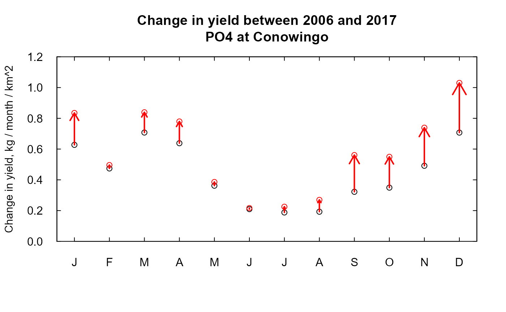

Introduction
This vignette is about producing a single type of figure. It is designed to examine the trends between a pair of years (using runPairs in EGRET terminology) to see what the size of the trend is for each of the twelve months of the year. It was used to make Figure 8 in Choquette et al., 2019. It is very helpful in trying to see if the trend is very specific to a certain part of the year (or even opposite in different parts of the year) versus being fairly similar across all the months.
How to do it
You need two functions. One is called runPairsMonths.R to do the computations and the other is called plotOne.R which makes the plots. These two functions are included below. You should set up a working directory and then you can copy these functions into your working directory. You be you need an EGRET eList in the directory as well. It should be an eList for which modelEstimation has already been run.
Here is the code
# This is function called runPairsMonths
# It is virtually identical to the EGRET function runPairs
# To learn the meaning of each of these initial arguments
# The best thing to do is load the EGRET package
# and then do ?runPairs
# the help page you will get defines all of these
runPairsMonths <- function(eList, year1, year2, windowSide = 0, flowBreak = FALSE,
Q1EndDate = NA, QStartDate = NA, QEndDate = NA, wall = FALSE,
oldSurface = TRUE, sample1EndDate = NA, sampleStartDate = NA,
sampleEndDate = NA, minNumObs = 100,
minNumUncen = 50, fractMin = 0.75, windowY = 7, windowQ = 2,
windowS = 0.5, edgeAdjust = TRUE){
paStart <- 1
paLong <- 12
{
if (wall & oldSurface) {
message("Setting both arguments wall and oldSurfaces to TRUE are not allowed.")
message("Re-calculating surface.")
oldSurface <- FALSE
}
if (!is.egret(eList)) {
stop("Please check eList argument")
}
localSample <- getSample(eList)
startEndSurface1 <- startEnd(paStart, paLong, year1)
startEndSurface2 <- startEnd(paStart, paLong, year2)
if (startEndSurface2$startDate > range(localSample$Date)[2]) {
stop("year2 is outside the Sample range")
}
if (startEndSurface1$endDate < range(localSample$Date)[1]) {
stop("year1 is outside the Sample range")
}
sampleStartDate <- if (is.na(sampleStartDate))
localSample$Date[1]
else as.Date(sampleStartDate)
numSamples <- length(localSample$Date)
sampleEndDate <- if (is.na(sampleEndDate))
localSample$Date[numSamples]
else as.Date(sampleEndDate)
localDaily <- getDaily(eList)
QStartDate <- if (is.na(QStartDate))
localDaily$Date[1]
else as.Date(QStartDate)
numQDays <- length(localDaily$Date)
QEndDate <- if (is.na(QEndDate))
localDaily$Date[numQDays]
else as.Date(QEndDate)
if (sampleStartDate > as.Date(startEndSurface1[[2]])) {
stop("Sample start is later than year2")
}
if (sampleEndDate < as.Date(startEndSurface2[[1]])) {
stop("Sample end is earlier than year1")
}
localsurfaces <- getSurfaces(eList)
if (oldSurface) {
if (all(is.na(localsurfaces))) {
message("No surface included in eList, running estSurface function")
oldSurface <- FALSE
}
}
if (flowBreak && is.na(Q1EndDate))
stop("if there is a flowBreak you must provide Q1EndDate")
flowNormStartCol <- "flowNormStart"
flowNormEndCol <- "flowNormEnd"
flowStartCol <- "flowStart"
flowEndCol <- "flowEnd"
if (windowSide <= 0 && !flowBreak) {
flowStart <- c(startEndSurface1[["startDate"]], startEndSurface2[["startDate"]])
flowEnd <- c(startEndSurface1[["endDate"]], startEndSurface2[["endDate"]])
flowNormStart <- c(QStartDate, QStartDate)
flowNormEnd <- c(QEndDate, QEndDate)
dateInfo <- data.frame(flowNormStart, flowNormEnd, flowStart,
flowEnd, stringsAsFactors = FALSE)
}
else if (windowSide > 0 & !flowBreak) {
dateInfo1 <- makeDateInfo(windowSide, startEndSurface1[["startDate"]],
startEndSurface1[["endDate"]], QStartDate, QEndDate)
dateInfo2 <- makeDateInfo(windowSide, startEndSurface2[["startDate"]],
startEndSurface2[["endDate"]], QStartDate, QEndDate)
dateInfo <- rbind(dateInfo1, dateInfo2)
}
else if (windowSide <= 0 && flowBreak) {
Q1EndDate <- as.Date(Q1EndDate)
Q2StartDate <- Q1EndDate + 1
flowStart <- c(startEndSurface1[["startDate"]], startEndSurface2[["startDate"]])
flowEnd <- c(startEndSurface1[["endDate"]], startEndSurface2[["endDate"]])
flowNormStart <- c(as.Date(QStartDate), as.Date(Q2StartDate))
flowNormEnd <- c(as.Date(Q1EndDate), as.Date(QEndDate))
dateInfo <- data.frame(flowNormStart, flowNormEnd, flowStart,
flowEnd, stringsAsFactors = FALSE)
}
else {
Q1EndDate <- as.Date(Q1EndDate)
Q2StartDate <- Q1EndDate + 1
dateInfo1 <- makeDateInfo(windowSide, startEndSurface1[["startDate"]],
startEndSurface1[["endDate"]], QStartDate, Q1EndDate)
dateInfo2 <- makeDateInfo(windowSide, startEndSurface2[["startDate"]],
startEndSurface2[["endDate"]], Q2StartDate, QEndDate)
dateInfo <- rbind(dateInfo1, dateInfo2)
}
if (wall) {
if (is.na(sample1EndDate)) {
stop("When using the wall option, please specify sample1EndDate")
}
sample1EndDate <- as.Date(sample1EndDate)
sample2StartDate <- as.Date(sample1EndDate) + 1
sample1StartDate <- as.Date(sampleStartDate)
sample2EndDate <- as.Date(sampleEndDate)
}
else {
sample1StartDate <- as.Date(sampleStartDate)
sample2StartDate <- as.Date(sampleStartDate)
sample1EndDate <- as.Date(sampleEndDate)
sample2EndDate <- as.Date(sampleEndDate)
}
Sample1 <- localSample[localSample$Date >= sample1StartDate &
localSample$Date <= sample1EndDate, ]
Sample2 <- localSample[localSample$Date >= sample2StartDate &
localSample$Date <= sample2EndDate, ]
fractMin <- min(fractMin, 1)
minNumObs <- ceiling(min(minNumObs, fractMin * length(Sample1$Date),
fractMin * length(Sample2$Date)))
minNumUncen <- ceiling(min(0.5 * minNumObs, minNumUncen))
message("Sample1 has ", length(Sample1$Date), " Samples and ",
sum(Sample1$Uncen), " are uncensored")
message("Sample2 has ", length(Sample2$Date), " Samples and ",
sum(Sample2$Uncen), " are uncensored")
message("minNumObs has been set to ", minNumObs, " minNumUncen has been set to ",
minNumUncen)
check <- rep(1, 4)
if (minNumObs > length(Sample1$Date))
check[1] <- 0
if (minNumObs > length(Sample2$Date))
check[2] <- 0
if (minNumUncen > sum(Sample1$Uncen))
check[3] <- 0
if (minNumUncen > sum(Sample2$Uncen))
check[4] <- 0
if (sum(check) < 4) {
stop("Data set too small for minNumObs or minNumUncen")
}
message("Sample1 has ", length(Sample1$Date), " Samples and ",
sum(Sample1$Uncen), " are uncensored")
message("Sample2 has ", length(Sample2$Date), " Samples and ",
sum(Sample2$Uncen), " are uncensored")
message("minNumObs has been set to ", minNumObs, " minNumUncen has been set to ",
minNumUncen)
Daily1 <- localDaily[localDaily$Date >= dateInfo$flowNormStart[1] &
localDaily$Date <= dateInfo$flowNormEnd[1], ]
Daily2 <- localDaily[localDaily$Date >= dateInfo$flowNormStart[2] &
localDaily$Date <= dateInfo$flowNormEnd[2], ]
if (oldSurface) {
checkSurfaceSpan(eList)
if (all(c("Year", "LogQ", "surfaceIndex") %in% names(attributes(localsurfaces)))) {
surfaceYear <- attr(localsurfaces, "Year")
LogQ <- attr(localsurfaces, "LogQ")
}
else {
localINFO <- getInfo(eList)
LogQ <- seq(localINFO$bottomLogQ, by = localINFO$stepLogQ,
length.out = localINFO$nVectorLogQ)
surfaceYear <- seq(localINFO$bottomYear, by = localINFO$stepYear,
length.out = localINFO$nVectorYear)
}
startDec1 <- decimalDate(startEndSurface1[["startDate"]])
endDec1 <- decimalDate(startEndSurface1[["endDate"]])
startDec2 <- decimalDate(startEndSurface2[["startDate"]])
endDec2 <- decimalDate(startEndSurface2[["endDate"]])
surfIndex1 <- which(surfaceYear >= startDec1 & surfaceYear <=
endDec1)
surfIndex1 <- c(surfIndex1[1] - 1, surfIndex1, surfIndex1[length(surfIndex1)] +
1)
surfIndex2 <- which(surfaceYear >= startDec2 & surfaceYear <=
endDec2)
surfIndex2 <- c(surfIndex2[1] - 1, surfIndex2, surfIndex2[length(surfIndex2)] +
1)
surfaces1 <- localsurfaces[, surfIndex1, ]
surfaces2 <- localsurfaces[, surfIndex2, ]
attr(surfaces1, "LogQ") <- LogQ
attr(surfaces1, "Year") <- surfaceYear[surfIndex1]
attr(surfaces2, "LogQ") <- LogQ
attr(surfaces2, "Year") <- surfaceYear[surfIndex2]
}
else {
surfaces1 <- estSurfaces(eList, surfaceStart = startEndSurface1[["startDate"]],
surfaceEnd = startEndSurface1[["endDate"]], localSample = Sample1,
minNumObs = minNumObs, minNumUncen = minNumUncen,
windowY = windowY, windowQ = windowQ, windowS = windowS,
edgeAdjust = edgeAdjust, verbose = FALSE)
surfaces2 <- estSurfaces(eList, surfaceStart = startEndSurface2[["startDate"]],
surfaceEnd = startEndSurface2[["endDate"]], localSample = Sample2,
minNumObs = minNumObs, minNumUncen = minNumUncen,
windowY = windowY, windowQ = windowQ, windowS = windowS,
edgeAdjust = edgeAdjust, verbose = FALSE)
}
DailyRS1FD1 <- estDailyFromSurfaces(eList, localsurfaces = surfaces1,
localDaily = Daily1)
annualFlex <- setupYears(DailyRS1FD1, paLong = paLong, paStart = paStart)
c11 <- mean(annualFlex$FNConc, na.rm = TRUE)
f11 <- mean(annualFlex$FNFlux, na.rm = TRUE)
DailyRS2FD2 <- estDailyFromSurfaces(eList, localsurfaces = surfaces2,
localDaily = Daily2)
annualFlex <- setupYears(DailyRS2FD2, paLong = paLong, paStart = paStart)
c22 <- mean(annualFlex$FNConc, na.rm = TRUE)
f22 <- mean(annualFlex$FNFlux, na.rm = TRUE)
Daily0 <- localDaily[localDaily$Date >= QStartDate & localDaily$Date <=
QEndDate, ]
DailyRS1FD0 <- estDailyFromSurfaces(eList, localsurfaces = surfaces1,
localDaily = Daily0)
annualFlex <- setupYears(DailyRS1FD0, paLong = paLong, paStart = paStart)
c10 <- mean(annualFlex$FNConc, na.rm = TRUE)
f10 <- mean(annualFlex$FNFlux, na.rm = TRUE)
DailyRS2FD0 <- estDailyFromSurfaces(eList, localsurfaces = surfaces2,
localDaily = Daily0)
annualFlex <- setupYears(DailyRS2FD0, paLong = paLong, paStart = paStart)
c20 <- mean(annualFlex$FNConc, na.rm = TRUE)
f20 <- mean(annualFlex$FNFlux, na.rm = TRUE)
cDeltaTotal <- c22 - c11
cRSpart <- c20 - c10
cFDpart <- cDeltaTotal - cRSpart
fDeltaTotal <- f22 - f11
fRSpart <- f20 - f10
fFDpart <- fDeltaTotal - fRSpart
totChangePct_conc <- 100 * cDeltaTotal/c11
totChangePct_flux <- 100 * fDeltaTotal/f11
CQTC_percent_conc <- 100 * cRSpart/c11
QTC_percent_conc <- 100 * cFDpart/c11
CQTC_percent_flux <- 100 * fRSpart/f11
QTC_percent_flux <- 100 * fFDpart/f11
pairResults <- as.data.frame(matrix(ncol = 7, nrow = 2))
colnames(pairResults) <- c("TotalChange", "CQTC", "QTC",
"x10", "x11", "x20", "x22")
rownames(pairResults) <- c("Conc", "Flux")
pairResults[1, ] <- c(cDeltaTotal, cRSpart, cFDpart, c10,
c11, c20, c22)
pairResults[2, ] <- 0.00036525 * c(fDeltaTotal, fRSpart,
fFDpart, f10, f11, f20, f22)
yearPairInfo <- c(paStart, paLong, year1, year2)
names(yearPairInfo) <- c("paStart", "paLong", "year1", "year2")
attr(pairResults, "yearPair") <- yearPairInfo
attr(pairResults, "dateInfo") <- dateInfo
SampleBlocks <- c(sample1StartDate, sample1EndDate, sample2StartDate,
sample2EndDate)
names(SampleBlocks) <- c("sample1StartDate", "sample1EndDate",
"sample2StartDate", "sample2EndDate")
attr(pairResults, "SampleBlocks") <- SampleBlocks
Other <- list(minNumObs = minNumObs, minNumUncen = minNumUncen,
windowY = windowY, windowQ = windowQ, windowS = windowS,
wall = wall, edgeAdjust = edgeAdjust, QStartDate = as.Date(QStartDate),
QEndDate = as.Date(QEndDate), PercentChangeConc = c(`Total Percent Change` = totChangePct_conc,
`CQTC Percent` = CQTC_percent_conc, `QTC Percent` = QTC_percent_conc),
PercentChangeFlux = c(`Total Percent Change` = totChangePct_flux,
`CQTC Percent` = CQTC_percent_flux, `QTC Percent` = QTC_percent_flux))
attr(pairResults, "Other") <- Other
cat("\n ", eList$INFO$shortName, "\n ", eList$INFO$paramShortName)
periodName <- setSeasonLabelByUser(paStart, paLong)
cat("\n ", periodName, "\n")
if (wall)
cat("\n Sample data set was partitioned with a wall right after ",
as.character(sample1EndDate), "\n")
cat("\n Change estimates ", year2, " minus ", year1, "\n")
totChange <- format(pairResults[1, 1], digits = 3)
totChangePct_conc_f <- format(totChangePct_conc, digits = 2)
cat("\n For concentration: total change is ", totChange,
"mg/L")
cat("\n expressed as Percent Change is ", totChangePct_conc_f,
"%")
pctRS <- format(CQTC_percent_conc, digits = 2)
pctFD <- format(QTC_percent_conc, digits = 2)
cat("\n\n Concentration v. Q Trend Component ", pctRS, "%\n Q Trend Component ",
pctFD, "% \n\n")
totChange <- format(pairResults[2, 1], digits = 3)
totChangePct_flux_f <- format((totChangePct_flux), digits = 2)
cat("\n For flux: total change is ", totChange, "million kg/year")
cat("\n expressed as Percent Change is ", totChangePct_flux_f,
"%")
pctRS <- format(CQTC_percent_flux, digits = 2)
pctFD <- format(QTC_percent_flux, digits = 2)
cat("\n\n Concentration v. Q Trend Component ", pctRS, "%\n Q Trend Component ",
pctFD, "% \n\n")
print(pairResults[, 1:7], digits = 2)
z <- matrix(ncol = 12, nrow = 2)
colnames(z) <- c("Jan","Feb","Mar","Apr","May","Jun","Jul","Aug","Sep","Oct","Nov","Dec")
k <- c(31, 28.25, 31, 30, 31, 30, 31, 31, 30, 31, 30, 31) / eList$INFO$drainSqKm
eList1 <- as.egret(eList$INFO, DailyRS1FD1, eList$Sample)
monthlyResults1 <- calculateMonthlyResults(eList1)
monthlyResults1 <- na.omit(monthlyResults1)
eList2 <- as.egret(eList$INFO, DailyRS2FD2, eList$Sample)
monthlyResults2 <- calculateMonthlyResults(eList2)
monthlyResults2 <- na.omit(monthlyResults2)
for(i in 1:12){
m1 <- monthlyResults1[monthlyResults1[,1]==i,]
z[1,i] <- m1[1,8] * k[i]
m2 <- monthlyResults2[monthlyResults2[,1]==i,]
z[2,i] <- m2[1,8] * k[i]
}
}
return(z)
}
#
#
# this is written for kg/month/km^2
# the arguments yMax, arrowFactor, and name can all be
# adjusted to make some changes in the figure
plotOne <- function(z, yMax = NA, arrowFactor = 0.4,
name = "Change in yield, by month"){
zMax <- max(z)
yMax <- if(is.na(yMax)) zMax * 1.05 else yMax
monthAbb <- c("J","F","M","A","M","J","J","A","S","O","N","D")
par(las = 1, tck = 0.02, xaxs = "i", yaxs = "i")
plot(seq(1,12),z[1,],xlim = c(0.5,12.5), ylim = c(0, yMax),
xlab = "", ylab = "Change in yield, kg / month / km^2",
main = name, col = "black", axes = FALSE, cex.lab = 0.95)
axis(1, at = seq(1, 12), labels = monthAbb, tick = TRUE)
axis(2, at = NULL, labels = TRUE, tick = TRUE)
axis(3, at = seq(1, 12), labels = FALSE, tick = TRUE)
axis(4, at = NULL, labels = FALSE, tick = TRUE)
box()
par(new = TRUE)
plot(seq(1,12),z[2,],xlim = c(0.5,12.5), ylim = c(0, yMax),
xlab = "", ylab = "",
main = "", col = "red", axes = FALSE)
for(m in 1: 12){
x0 <- m
x1 <- m
y0 <- z[1,m]
y1 <- z[2,m]
col <- if(y1 > y0) "red" else "black"
length <- arrowFactor * abs(y1 - y0)
angle <- 30
lwd <- 2
arrows(x0, y0, x1, y1, length = length, angle = angle, col = col, lwd = lwd)
}
}Now let’s run it
library(EGRET)
load("Conowingo.PO4.RData")
# source("runPairsMonths.R")
# source("plotOne.R")
z <- runPairsMonths(eList, year1 = 2006, year2 = 2017)## Sample1 has 925 Samples and 769 are uncensored## Sample2 has 925 Samples and 769 are uncensored## minNumObs has been set to 100 minNumUncen has been set to 50## Sample1 has 925 Samples and 769 are uncensored## Sample2 has 925 Samples and 769 are uncensored## minNumObs has been set to 100 minNumUncen has been set to 50##
## SUSQUEHANNA RIVER AT CONOWINGO, MD
## 00671
## Calendar Year
##
## Change estimates 2017 minus 2006
##
## For concentration: total change is 0.000904 mg/L
## expressed as Percent Change is 10 %
##
## Concentration v. Q Trend Component 10 %
## Q Trend Component 0 %
##
##
## For flux: total change is 0.116 million kg/year
## expressed as Percent Change is 31 %
##
## Concentration v. Q Trend Component 31 %
## Q Trend Component 0 %
##
## TotalChange CQTC QTC x10 x11 x20 x22
## Conc 0.0009 0.0009 0 0.0088 0.0088 0.0097 0.0097
## Flux 0.1164 0.1164 0 0.3698 0.3698 0.4862 0.4862# z contains the results, they are expressed as yields in kg/month/km^2
# z[1,1:12] are the yields in year 1, by month Jan, Feb, ... Dec
# z[2,1:12] are the yields in year 2, by month Jan, Feb, ... Dec
print(z)## Jan Feb Mar Apr May Jun Jul
## [1,] 0.6273932 0.4739879 0.7075350 0.6380653 0.3619343 0.2097517 0.1878099
## [2,] 0.8347853 0.4960114 0.8392184 0.7795324 0.3860591 0.2166557 0.2252040
## Aug Sep Oct Nov Dec
## [1,] 0.1927015 0.3222020 0.3493139 0.4913913 0.7070998
## [2,] 0.2696814 0.5610262 0.5496506 0.7390136 1.0301296
####
###we might want to make a few changes in the look of the figure, for example
plotOne(z, yMax = 1.2, arrowFactor = 0.6, name = "Change in yield between 2006 and 2017\nPO4 at Conowingo")